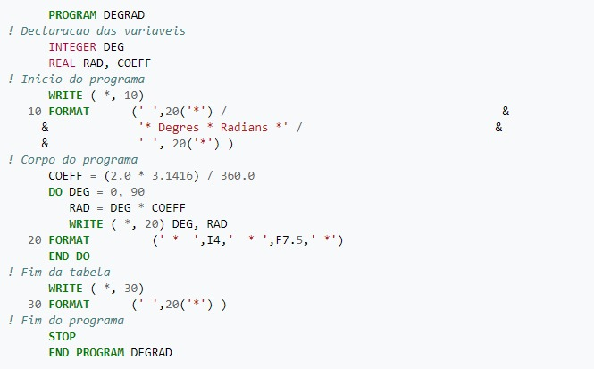

Fortran (1954)
O Fortran (Formula Translation), criado em 1954 por uma equipe liderada por John Backus na IBM, é uma das linguagens de programação mais antigas ainda em uso. Foi projetada para fins científicos e de engenharia, sendo amplamente utilizada em cálculos numéricos e computação de alto desempenho.
O principal motivo para a criação do Fortran foi fornecer uma linguagem de programação de alto nível que pudesse ser usada para escrever programas científicos e de engenharia de forma eficiente.

O Fortran introduziu conceitos inovadores, como a capacidade de expressar fórmulas matemáticas diretamente no código, o que facilitou o trabalho dos cientistas e engenheiros. Além disso, o Fortran trouxe recursos avançados para cálculos numéricos, como tipos de dados especiais para representar números reais e complexos, funções matemáticas incorporadas e manipulação eficiente de matrizes e vetores.
Atividade desenvolvida como extensão no projeto
PACEX/Mundo Tech do curso de análise e Desenvolvimento de Sistemas
Unipar - Cascavel